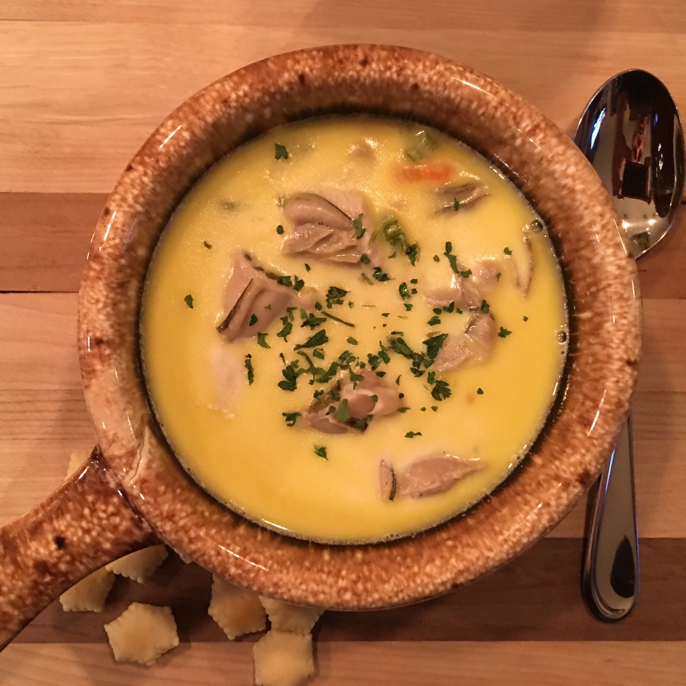

Oyster Stew

Description
This is the best Oyster Stew you've ever had! Its elegant and satisfying. I serve it with toasted homemade bread. Serve it quick and hot, try adding a drop or two of hot sauce in your stew -- it's delicious!
Ingredients
1/2 cup butter
1 cup minced celery
3 tablespoons minced shallots
1 quart half-and-half cream
1 (12 ounce) containers fresh shucked oysters, undrained
salt and ground black pepper to taste
1 pinch cayenne pepper, or to taste
Steps
- Melt the butter in a large skillet over medium head, and cook the celery and shallots until shallots are tender.
- Pour half-and-half into a large pot over medium-high heat. Mix in the butter, celery, and shallot mixture. Stir continuously. When the mixture is almost boiling, pour the oysters and their liquid into the pot. Season with salt, pepper, and cayenne pepper. Stir continuously until the oysters curl at the ends. When the oysters curl the stew is finished cooking. Turn off head and serve.